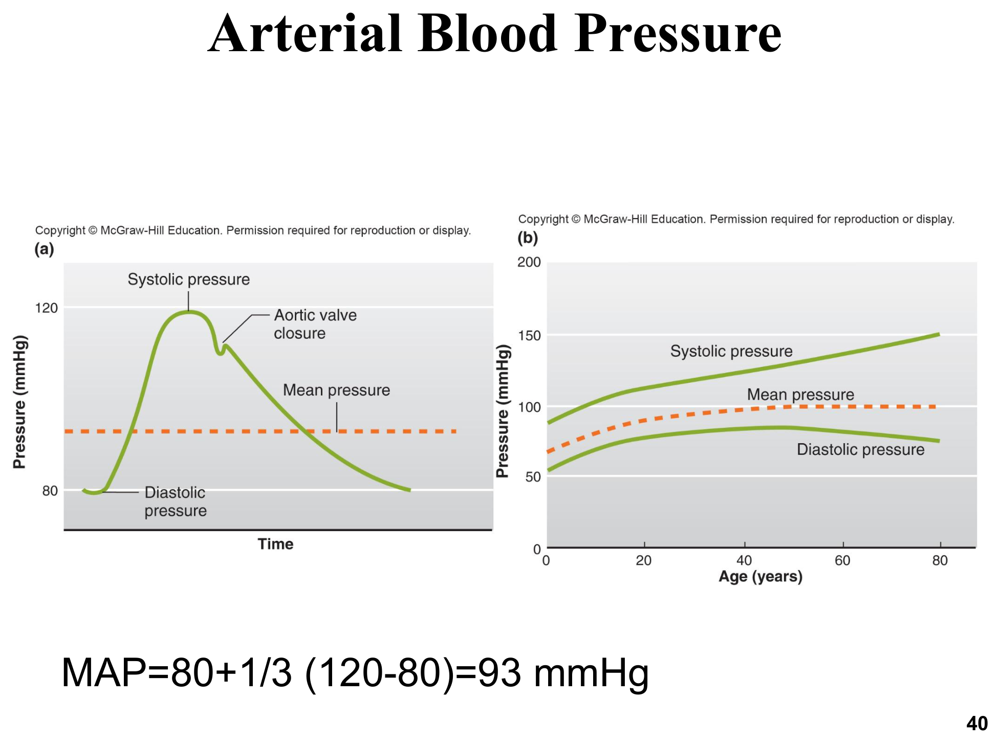
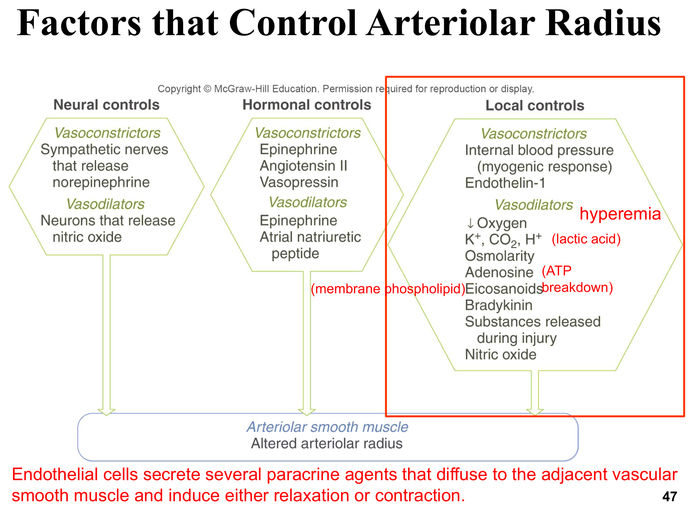
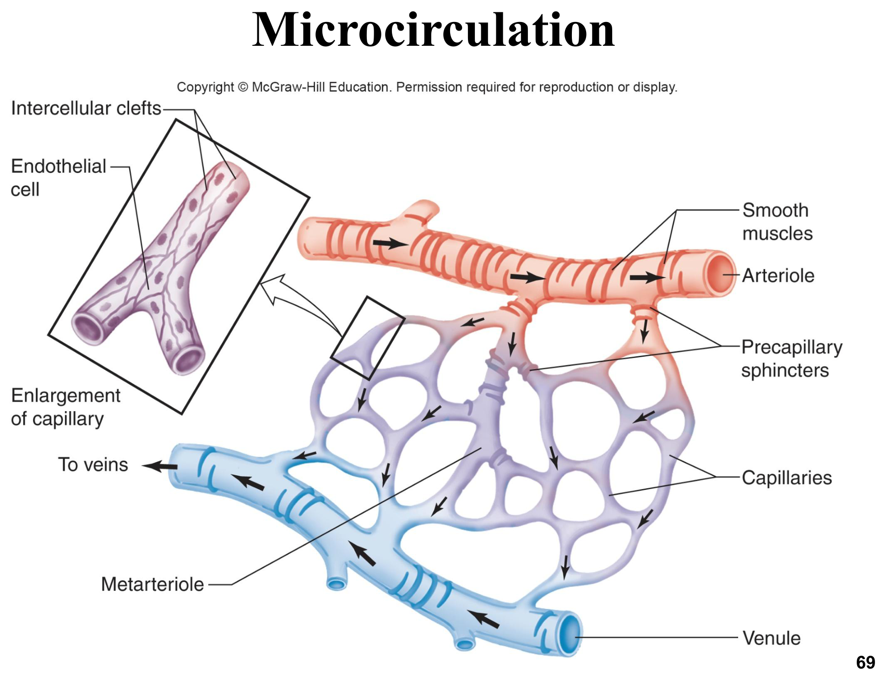
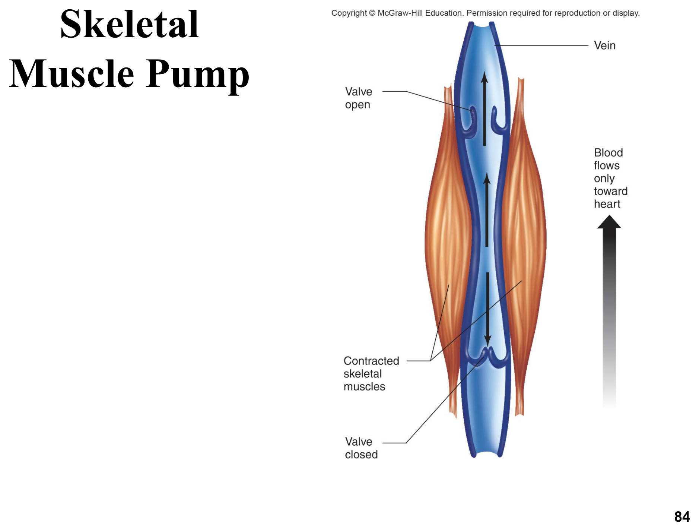

血管系統總覽與分類
血管系統是循環系統的「管路」，動脈與靜脈皆含血管平滑肌與內皮細胞，但比例依血管種類不同，功能也隨之分化。
| 血管種類 | 構造特性 | 功能 |
|---|---|---|
| 彈性動脈 Elastic arteries | 大管腔，富含彈性蛋白（如主動脈） | 「壓力儲庫」——收縮期擴張儲存能量、舒張期回彈推送血流，使血流維持連續性 |
| 肌肉動脈 Muscular arteries | 中膜平滑肌比例最高（如腸繫膜動脈、腎動脈） | 將血液送至特定器官，主動參與血管收縮，對血壓調控影響大 |
| 小動脈 Arterioles | 最小的動脈，受神經、激素、局部化學物質調控 | 控制微血管床的分秒血流量，是調節周邊阻力的主要部位 |
| 微血管 Capillaries | 單層內皮細胞，管壁最薄 | 氣體、養分、代謝廢物交換的場所 |
| 靜脈系統 Venules/Veins | 管壁較薄，平滑肌少、彈性蛋白多，可高度擴張 | 「容量儲庫（capacitance vessels）」，容納體循環血量約60–70% |
全身循環血量中，微血管僅容納約5%，卻是唯一直接進行養分/氣體/激素訊號交換與廢物移除的場所——其餘血管的功能都是為了將血液有效率地送達或送離這5%的交換場域。動脈攜帶含氧血、靜脈攜帶缺氧血，唯一例外是肺循環：肺動脈攜帶缺氧血送往肺臟氣體交換，肺靜脈攜帶含氧血送回心臟（見「心臟生理學」章節兩大循環迴路）。
壓力、流量、阻力
血液動力學（hemodynamics）以三個核心變數描述血流：壓力、流量、阻力，三者關係是理解全章節（乃至下一章「心血管功能整合」）的數學骨架。
核心公式
| 變數 | 定義 | 單位 |
|---|---|---|
| 壓力 Pressure (P) | 驅動血流的力 | mmHg |
| 流量 Flow (F) | 單位時間內移動的血液體積 | mL/min |
| 阻力 Resistance (R) | 血流在兩點間移動的困難程度（摩擦阻礙） | — |
三者的基本關係式：F = ΔP / R——若壓力差不變、阻力增加，流量必然下降；這是理解「血管收縮如何降低局部血流」「阻力增加如何影響全身血壓」等所有下游推論的起點公式。
決定阻力的三個因子（Poiseuille方程式）
R = 8Lη / πr⁴，其中L為血管長度、η為血液黏滯度、r為血管內半徑。三個因子中：
- 血液黏滯度：受水分含量、紅血球數量、血漿蛋白濃度影響
- 血管總長度：需要輸送的「管路」總長
- 血管半徑：對分秒調控阻力貢獻最大的因子——因阻力與半徑的4次方成反比，血管半徑極小的變化即可造成阻力巨大變化，是小動脈能有效即時調控局部血流量的物理基礎
半徑的4次方關係意味著：血管半徑若縮小一半，阻力將增加至16倍（2⁴＝16）。這正是為何小動脈（而非大動脈或微血管本身）是全身血壓調控中「阻力血管」的主角。
動脈壓與脈搏壓
動脈壓在心動週期中並非固定值，而是隨收縮期與舒張期波動，理解此波動的組成與量測方式，是臨床血壓判讀的生理基礎。

平均動脈壓 Mean Arterial Pressure (MAP)
MAP並非單純的收縮壓與舒張壓平均值，因心動週期中舒張期時間較長，計算公式為：
MAP = DP + 1/3(SP − DP)，其中DP為舒張壓、SP為收縮壓。範例：SP=120、DP=80時，MAP = 80 + 1/3(120−80) = 93 mmHg。MAP同時受心輸出量與全身血管阻力影響（MAP ≈ CO × TPR，見「心血管功能整合」章節）。
脈搏壓 Pulse Pressure
脈搏壓＝收縮壓－舒張壓（範例中為120−80＝40 mmHg），可在頸部或腕部動脈觸診感受到的搏動即源自此壓力波動。決定脈搏壓大小的三個主要因子：
- 每搏量（SV）——SV越大，脈搏壓越大
- 每搏量射出速度——射出越快，脈搏壓越大
- 動脈順應性（compliance）——順應性下降（如動脈硬化）會使同樣SV產生更大的壓力波動，脈搏壓上升
順應性（compliance）＝Δ容積/Δ壓力，順應性越高的血管結構越容易被撐大。彈性動脈的高順應性使其成為「壓力儲庫」，收縮期擴張吸收部分射血能量、舒張期回彈釋放，讓血流得以在舒張期仍持續前進而非完全停滯。
動脈粥狀硬化（atherosclerosis）與動脈硬化（arteriosclerosis）會降低動脈順應性，使脈搏壓上升；長期壓力過高則可能使血管壁重塑或減弱，減弱處有破裂風險。血壓測量以柯氏音（Korotkoff sounds）搭配血壓計（sphygmomanometer）進行，人類收縮壓/舒張壓平均約120/80 mmHg，高於140/90 mmHg視為高血壓；犬貓的血壓判讀標準與人類不同，需參照各物種常模。
血流自我調節
自我調節（autoregulation）是指血流依據組織當下的代謝需求自動調整的能力，獨立於全身性因子，由局部小動脈直徑改變達成，涵蓋代謝性與肌源性兩種機制。

代謝性局部控制（主動充血 Active Hyperemia）
組織代謝活躍時，局部氧氣下降、CO₂/H⁺/K⁺等代謝產物堆積，這些化學因子直接作用於鄰近小動脈平滑肌，引發血管舒張，增加局部血流以滿足代謝需求，此現象稱主動充血。促進舒張的局部化學因子整理如下：
缺氧（↓O₂）、CO₂增加、H⁺增加（酸中毒/乳酸）、腺苷（ATP分解產物）
類花生酸（膜磷脂分解產物）、緩激肽（血漿激肽釋放酶系統產物）
一氧化氮（NO，內皮細胞釋放，作用於鄰近平滑肌）、內皮源性過極化因子（EDHF）
肌源性反應 Myogenic Response
血管平滑肌本身對被動拉伸有內建的收縮反應：內部血壓升高使血管壁被動擴張時，平滑肌會直接反射性收縮以對抗過度擴張，此機制不依賴神經或激素，是血管內部血壓過高時自我保護、避免微血管床承受過大壓力的重要機制，也是流體壓力自我調節（如腎臟腎絲球濾過率自我調節）的重要組成之一。
神經與激素調控
除局部自我調節外，全身性的神經與激素訊號可依身體整體需求（如運動、出血、緊迫）調整周邊血管張力，是「心血管功能整合」章節壓力反射的下游執行者。
神經控制
交感神經節後纖維釋放正腎上腺素（NE），作用於血管平滑肌的α腎上腺素受體造成收縮，是多數血管床的預設調控路徑；部分血管（如骨骼肌血管）也接受釋放NO的舒血管神經支配。副交感神經對多數周邊血管影響有限。
激素控制
| 激素 | 效果 | 備註 |
|---|---|---|
| 腎上腺素 Epinephrine | 收縮或舒張（雙重效果） | 作用於α受體致收縮（多數血管床），作用於骨骼肌血管的β2受體則致舒張——與「肌肉生理學」章節平滑肌受體選擇性概念呼應 |
| 血管收縮素II Angiotensin II | 強力收縮 | RAAS系統產物，見「心血管功能整合」章節 |
| 抗利尿激素 Vasopressin (ADH) | 收縮（高劑量時，經V1A受體） | 低血容狀態下由下視丘釋放，兼具保水與升壓雙重效果 |
| 心房利鈉肽 ANP | 舒張 | 心房壁過度伸張時分泌，同時促進腎臟排鈉排水（見「心臟生理學」章節） |
正常內皮細胞持續分泌NO等舒血管物質以維持血管張力平衡；動脈粥狀硬化區域的內皮細胞功能異常，會分泌過量內皮素-1（endothelin-1，強力收縮劑）並減少舒血管物質分泌，促進局部血管收縮與病灶惡化，是動脈粥狀硬化病理生理的重要一環。
微循環與微血管交換
微循環（microcirculation）涵蓋小動脈到微血管再到小靜脈的完整交換單位，是全身血管系統中真正發生物質交換的場域。

前微血管括約肌可獨立收縮或舒張，決定血流是否流經特定微血管分支，是局部精細調控血流分布的關鍵構造；微血管血流速度是全身血管系統中最慢的，因微血管床總橫截面積遠大於動脈，據連續性原理（流速與橫截面積成反比），流速最慢正好給予足夠時間進行物質交換。
微血管壁的交換機轉
脂溶性物質（O₂、CO₂）直接穿越內皮細胞膜；水溶性小分子經細胞間隙（intercellular clefts）擴散
依淨過濾壓力驅動水分與可溶質整批移動，決定組織間液的分布
淨過濾壓 Net Filtration Pressure (NFP)
NFP = (HPc − HPif) − (OPc − OPif)，其中HPc為微血管血液靜水壓、HPif為組織間液靜水壓、OPc為血液膠體滲透壓（主要由血漿蛋白如白蛋白決定）、OPif為組織間液膠體滲透壓。
- HP（靜水壓）＞OP（膠體滲透壓）時，液體被過濾（filtered）出微血管——微血管動脈端因血壓較高，通常以過濾為主
- OP＞HP時，液體被再吸收（reabsorbed）進入微血管——微血管靜脈端因血壓已下降、膠體滲透壓相對顯著，通常以再吸收為主
正常情況下，過濾量略大於再吸收量，每分鐘約1.5 mL的淨液體留在組織間隙，此差額由淋巴系統收集後送回循環系統（見下一節），是體液恆定的重要環節。
血漿白蛋白過低（如肝病、腎病蛋白流失、營養不良）會降低OPc，使NFP偏向過濾、液體滯留組織間隙，形成水腫（edema）或體腔積液，是低白蛋白血症動物臨床評估水腫成因的核心生理機轉。
靜脈系統與靜脈回流
靜脈壓力遠低於動脈（約15 mmHg），單靠此壓力不足以推動血液回到心臟，因此需要輔助機制協助靜脈回流。
靜脈的容量儲庫特性
靜脈管壁平滑肌少、彈性蛋白多，順應性高，容納全身循環血量約60–70%，因此稱為容量血管（capacitance vessels）；靜脈平滑肌同樣受交感神經支配，興奮時收縮、使靜脈管腔變窄，可將部分「儲存」的血液快速動員回心臟（是出血或運動時重要的代償機制之一，見「心血管功能整合」章節）。

兩種輔助靜脈回流的幫浦機制
呼吸造成的胸腔內壓變化，協助推動血液回流心臟
骨骼肌收縮擠壓周圍靜脈，配合單向瓣膜防止逆流，將血液向心臟方向推送
靜脈曲張（varicose veins）是靜脈瓣膜功能不全（閉鎖不全）導致靜脈擴張、扭曲的病變，好發於下肢——長時間站立、缺乏肌肉幫浦活動的動物或個體風險較高。長時間臥床或麻醉中的動物因缺乏肌肉幫浦活動，也可能出現靜脈回流不良的相關併發症風險。
淋巴系統
淋巴系統由淋巴管與淋巴組織構成，功能與血管系統互補，負責回收微血管淨過濾的多餘組織間液，同時兼具免疫監視功能。
淋巴系統的雙重功能
收集微血管淨過濾後未被再吸收的組織間液（約1.5 mL/min），經淋巴管送回靜脈循環，是體液恆定不可或缺的一環
淋巴液沿途經過淋巴結，由免疫細胞檢查病原體、細胞碎片等異物；淋巴組織也提供淋巴球增殖場所
淋巴管壁本身含平滑肌，可主動收縮產生類似幫浦的推送作用，配合與靜脈相似的單向瓣膜結構，確保淋巴液單方向流動並防止逆流。與血管不同，淋巴管可以攝入較大分子（如蛋白質、細胞碎片），這是血管內皮間隙（intercellular clefts）所無法有效運送的物質類別。
淋巴管阻塞或功能喪失（如絲蟲感染引發的象皮病 elephantiasis）會導致組織間液無法有效回收，造成慢性、進行性的組織腫脹（淋巴水腫），與微血管過濾/再吸收失衡引起的一般性水腫成因不同，需個別鑑別。
學習重點整理
本章的核心是「血管半徑如何主導阻力與血流分配」，以及「微血管淨過濾壓如何決定體液分布」。考題常考「Poiseuille方程式半徑4次方關係」「MAP/脈搏壓計算」「NFP計算與水腫成因」「靜脈回流輔助機制」。
練習題
涵蓋血液動力學、動脈壓、局部與周邊調控、微血管交換、靜脈回流等章節重點，題型參照國考與轉學考命題方向（含計算題），先自己作答再點「顯示答案」核對。
阻力 R = 8Lη/πr⁴，與半徑的4次方成反比。半徑縮小為一半（r→r/2）時，阻力變為 (1/(1/2))⁴ = 2⁴ = 16倍。這是國考與轉學考極常出現的計算題型，務必牢記半徑對阻力的4次方關係。
MAP = DP + 1/3(SP−DP) = 90 + 1/3(150−90) = 90 + 20 = 110 mmHg。此題120 mmHg是常見的錯誤答案（誤用SP與DP的算術平均值130或直接取中位數），需特別注意MAP公式並非單純平均，而是因舒張期時間較長而給予舒張壓更高的權重。
依連續性原理，同樣的血流量通過總橫截面積越大的區域，流速越慢；微血管床雖然單一微血管管徑極小，但數量龐大使總橫截面積遠大於動脈，因此血流速度在此處最慢，恰好提供足夠時間進行氣體與養分交換。
組織代謝旺盛時，局部氧氣下降、CO₂/H⁺/K⁺堆積、ATP分解產生腺苷，這些代謝相關的化學因子直接作用於鄰近小動脈平滑肌引發舒張，增加局部血流以滿足代謝需求，稱為主動充血（active hyperemia）。內皮素-1與血管收縮素II是收縮因子，正腎上腺素經α受體也是收縮效果。
白蛋白是決定血漿膠體滲透壓（OPc）的主要成分，低白蛋白血症使OPc下降，依NFP = (HPc−HPif)−(OPc−OPif)公式，OPc下降會使淨過濾壓（NFP）偏向過濾方向，液體因而更容易滯留於組織間隙，形成水腫或體腔積液，這是低白蛋白血症動物常見水腫的核心生理機轉，也是蛋白流失性腎病或腸病的重要臨床連結。
靜脈管壁平滑肌較少、彈性蛋白較多，順應性遠高於動脈，容納全身循環血量約60–70%，因此稱為容量血管（capacitance vessels）。靜脈壓約僅15 mmHg，遠低於動脈壓，單靠壓力差不足以推動血液回心臟，需仰賴呼吸幫浦與肌肉幫浦協助；靜脈平滑肌同樣受交感神經支配（NE作用），興奮時可收縮動員部分儲存血液。
肌源性反應是血管平滑肌本身對被動拉伸具有的內建收縮反應：當血管內部血壓升高、血管壁被動擴張時，平滑肌會直接反射性收縮以對抗過度擴張，此機制不依賴神經傳導或激素訊號，是一種局部、內在（intrinsic）的自我保護機制，可避免微血管床在血壓突然升高時承受過大壓力而受損。此機制在腎臟的腎絲球濾過率自我調節中扮演重要角色：當全身血壓在一定範圍內波動時，腎臟入球小動脈可透過肌源性反應自動調整血管半徑，使腎絲球內的血流量與過濾壓維持相對穩定，避免血壓波動直接大幅影響腎絲球過濾率。
脈搏壓主要由每搏量、射出速度、動脈順應性三個因子決定：每搏量增加會使脈搏壓上升；動脈順應性下降（如粥狀硬化使血管壁變硬）則使同樣的每搏量產生更大的壓力波動，同樣使脈搏壓上升。此題兩個因素同時朝脈搏壓上升方向作用，故答案明確為上升，這也是臨床上動脈硬化動物脈搏壓常偏高的生理基礎。
淋巴管與血管不同，其構造允許攝入較大分子（如蛋白質、細胞碎片、病原體等），這是血管內皮間隙（intercellular clefts）難以有效運送的物質類別，也是淋巴系統除了體液回收外，同時具備免疫監視功能（淋巴結檢查淋巴液中的病原體與異物）的構造基礎。
腎上腺素作用於α腎上腺素受體時造成血管收縮（多數血管床的主要反應），但作用於骨骼肌血管上密度較高的β2腎上腺素受體時則造成舒張，因此同一種激素在不同血管床可能因受體亞型分布不同而產生相反效果。此原理與「肌肉生理學」章節中正腎上腺素對血管（α受體收縮）與支氣管平滑肌（β2受體舒張）的受體選擇性概念完全一致，是跨章節整合的常見考點。